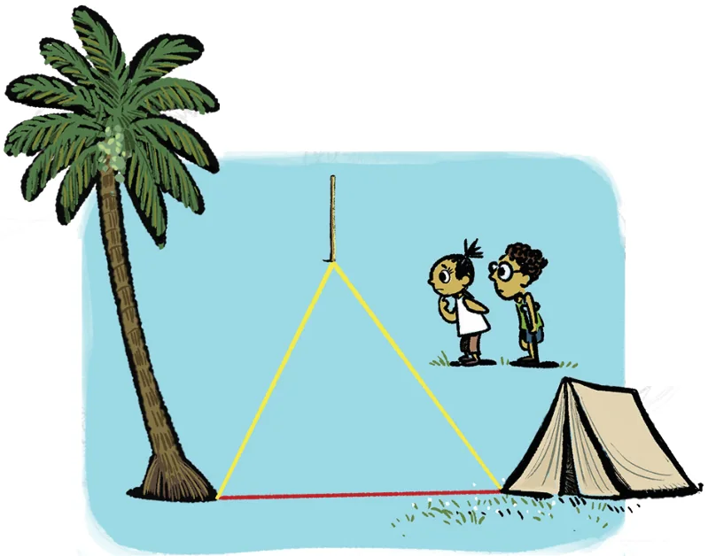
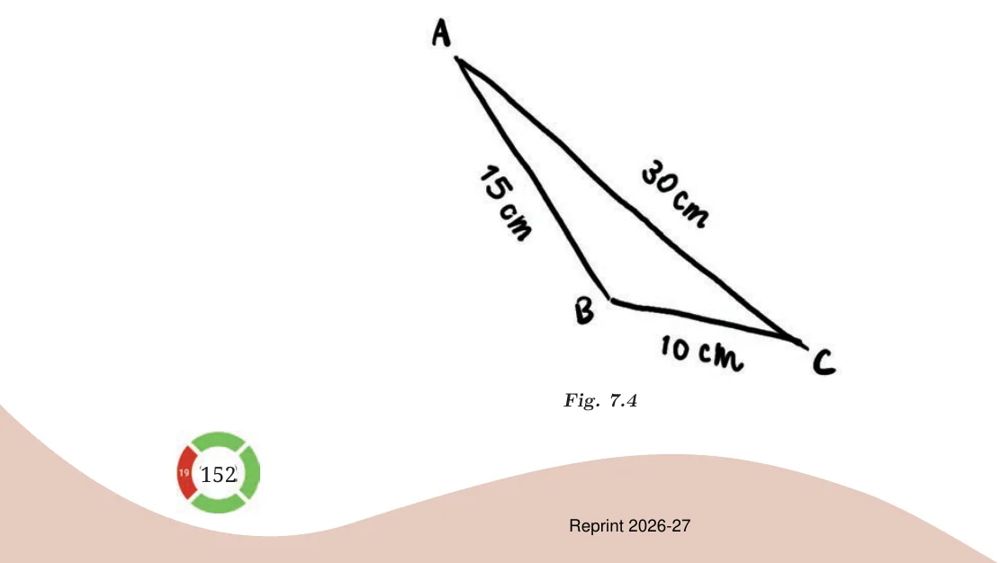

<!DOCTYPE html>
<html lang="en">
<head>
<meta charset="UTF-8">
<meta name="viewport" content="width=device-width,initial-scale=1">
<title>Are Triangles Possible for any Lengths? — A Tale of Three Intersecting Lines</title>
<meta name="description" content="Class 7 Mathematics · Part 1 · A Tale of Three Intersecting Lines · Are Triangles Possible for any Lengths?">
<link rel="icon" href="data:image/svg+xml,<svg xmlns='http://www.w3.org/2000/svg' viewBox='0 0 100 100'><text y='.9em' font-size='90'>📘</text></svg>">
<link rel="stylesheet" href="../../../assets/book.css">
<link rel="stylesheet" href="https://cdn.jsdelivr.net/npm/katex@0.16.11/dist/katex.min.css" crossorigin="anonymous">
</head>
<body>
<header class="topbar">
<div class="topbar-in">
  <div class="crumb">
    <span class="c1"><a href="../../../index.html">Library</a> · <a href="../../index.html">Class 7 Mathematics · Part 1</a></span>
    <span class="c2">A Tale of Three Intersecting Lines · Are Triangles Possible for any Lengths?</span>
  </div>
  <a class="tb-btn" data-nav="prev" href="../../07-a-tale-of-three-intersecting-lines/04-figure-it-out/index.html" title="Figure it Out">←</a>
  <details class="drawer"><summary class="tb-btn" title="Sections in this chapter">☰</summary>
<div class="drawer-panel"><div class="dh">A Tale of Three Intersecting Lines</div><a href="../01-chapter-opener/index.html">Chapter opener</a><a href="../02-constructing-a-triangle-when-its-sides-are-given-7.2/index.html">7.2 Constructing a Triangle When its Sides are Given</a><a href="../03-construct/index.html">Construct</a><a href="../04-figure-it-out/index.html">Figure it Out</a><a href="../05-are-triangles-possible-for-any-lengths/index.html" aria-current="page">Are Triangles Possible for any Lengths?</a><a href="../06-figure-it-out/index.html">Figure it Out</a><a href="../07-figure-it-out/index.html">Figure it Out</a><a href="../08-figure-it-out/index.html">Figure it Out</a><a href="../09-construction-of-triangles-when-some-sides-and-angles-are-g-7.3/index.html">7.3 Construction of Triangles When Some Sides and Angles are Given; Two Sides and the Included Angle</a><a href="../10-figure-it-out/index.html">Figure it Out</a><a href="../11-two-angles-and-the-included-side/index.html">Two Angles and the Included Side</a><a href="../12-figure-it-out/index.html">Figure it Out</a><a href="../13-figure-it-out/index.html">Figure it Out</a><a href="../14-figure-it-out/index.html">Figure it Out</a><a href="../15-angle-sum-property/index.html">Angle Sum Property</a><a href="../16-exterior-angles/index.html">Exterior Angles</a><a href="../17-constructions-related-to-altitudes-of-triangles-7.4/index.html">7.4 Constructions Related to Altitudes of Triangles</a><a href="../18-altitudes-using-paper-folding/index.html">Altitudes Using Paper Folding; Construction of the Altitudes of a Triangle</a><a href="../19-types-of-triangles-7.5/index.html">7.5 Types of Triangles</a><a href="../20-figure-it-out/index.html">Figure it Out</a><a href="../21-summary/index.html">SUMMARY</a><a href="../22-a-tale-of-three-intersecting-lines/index.html">A Tale of Three Intersecting Lines; Figure it Out</a><a href="../23-figure-it-out/index.html">Figure it Out</a><a href="../24-figure-it-out/index.html">Figure it Out</a><a href="../25-figure-it-out/index.html">Figure it Out</a><a href="../26-figure-it-out/index.html">Figure it Out</a><a href="../27-figure-it-out/index.html">Figure it Out</a></div></details>
  <a class="tb-btn" data-nav="next" href="../../07-a-tale-of-three-intersecting-lines/06-figure-it-out/index.html" title="Figure it Out">→</a>
  <button class="tb-btn" data-theme-toggle title="Toggle light / dark" aria-label="Toggle light or dark theme">◐</button>
</div>
<div class="progress"><span style="width:74.6%"></span></div>
</header>
<main class="wrap">
<div class="sec-head">
  <p class="eyebrow"><a href="../index.html">Chapter 7 · A Tale of Three Intersecting Lines</a></p>
  <h1>Are Triangles Possible for any Lengths?</h1>
  <p class="sec-meta">Textbook pages 6–8 · 6 figures</p>
</div>
<article class="prose">
<p>Can one construct triangles having any given sidelengths? Are there lengths for which it is impossible to construct a triangle? Let us explore this.</p>
<p>Construct a triangle with sidelengths 3 cm, 4 cm, and 8 cm. What is happening? Are you able to construct the triangle? Here is another set of lengths: 2 cm, 3 cm, and 6 cm. Check if a triangle is possible for these sidelengths.</p>
<figure class="fig side-fig"></figure>
<p>Try to find more sets of lengths for which a triangle construction is impossible. See if you can find any pattern in them. We see that a triangle is possible for some sets of lengths and not possible for others. How do we check if a triangle exists for a given set of lengths? One way is to actually try to construct the triangle and check if it is possible. Is there a more efficient way to check this?</p>
<p>Triangle Inequality</p>
<p>Consider the lengths 10 cm, 15 cm and 30 cm. Does there exist a triangle having these as sidelengths? To tackle this question, let us study a property of triangles. Imagine a small plot of plain land having a tent, a tree, and a pole. Imagine you are at the entrance of the tent and want to go to the tree. Which is the shorter path: (i) the straight-line path to the tree (the red path) or</p>
<ul class="qlist">
<li><span class="mk">(ii)</span><span class="lt">the straight-line path from the tent to the pole, followed by the</span></li>
</ul>
<figure class="fig wide"></figure>
<p>Clearly, the direct straight-line path from the tent to the tree is shorter than the roundabout path via the pole. In fact, the direct straight-line path is the shortest possible path to the tree from the tent.</p>
<figure class="fig wide"></figure>
<p>Will the direct path between any two points be shorter than the roundabout path via a third point? Clearly, the answer is yes. Can this understanding be used to tell something about the existence of a triangle having sidelengths 10 cm, 15 cm and 30 cm? Let us suppose that there is a triangle for this set of lengths. Remember that at this point we are not sure about the existence of the triangle but we are only supposing that it exists. Let us draw a rough diagram.</p>
<figure class="fig wide"></figure>
<p>Does everything look right with this triangle? If this triangle were possible, then the direct path between any two vertices should be shorter than the roundabout path via the third vertex. Is this true for our rough diagram? Let us consider the paths between B and C. Direct path length \(= BC = 10\) cm What is the length of the roundabout path via the vertex A? It is the sum of the lengths of line segments BA and AC. Roundabout path length \(= BA + AC = 15\) cm \(+ 30\) cm \(= 45\) cm Is the direct path length shorter than the roundabout path length? Yes. Let us now consider the paths between A and B. Direct path length \(= AB = 15\) cm Finding the length of the roundabout path via the vertex C, we get Roundabout path length \(= AC + CB = 30\) cm \(+ 10\) cm \(= 40\) cm Is the direct path length shorter than the roundabout path length? Yes. Finally, consider paths between C and A. Direct path length \(= CA = 30\) cm Roundabout path length \(= CB + BA = 10\) cm \(+ 15\) cm \(= 25\) cm Is the direct path length shorter than the roundabout path length? In this case, the direct path is longer, which is absurd. Can such a triangle exist? No. Therefore, a triangle having sidelengths 10 cm, 15 cm and 30 cm cannot exist. We are thus able to see without construction why a triangle for the set of lengths 10 cm, 15 cm and 30 cm cannot exist. We have been able to figure this out through spatial intuition and reasoning. Recall how we used similar intuition and reasoning to discover properties of intersecting and parallel lines. We will continue to do this as we explore geometry.</p>
<p>Can we say anything about the existence of a triangle having sidelengths 3 cm, 3 cm and 7 cm? Verify your answer by construction.</p>
<p>“In the rough diagram in Fig. 7.4, is it possible to assign lengths in a different order such that the direct paths are always coming out to be shorter than the roundabout paths? If this is possible, then a triangle might exist.” Is such rearrangement of lengths possible in the triangle? Math Talk</p>
</article>
<nav class="pager"><a class="" data-nav="prev" href="../../07-a-tale-of-three-intersecting-lines/04-figure-it-out/index.html"><span class="dir">← Previous</span><span class="t">Figure it Out</span><span class="ch">A Tale of Three Intersecting Lines</span></a><a class="nx" data-nav="next" href="../../07-a-tale-of-three-intersecting-lines/06-figure-it-out/index.html"><span class="dir">Next →</span><span class="t">Figure it Out</span><span class="ch">A Tale of Three Intersecting Lines</span></a></nav>
</main><footer class="site">Generated from the source textbook PDFs · text, figures and exercises belong to their respective publishers.</footer><script defer src="https://cdn.jsdelivr.net/npm/katex@0.16.11/dist/katex.min.js" crossorigin="anonymous"></script>
<script defer src="https://cdn.jsdelivr.net/npm/katex@0.16.11/dist/contrib/auto-render.min.js" crossorigin="anonymous"
  onload="renderMathInElement(document.body,{delimiters:[
    {left:'\\(',right:'\\)',display:false},
    {left:'$$',right:'$$',display:true},
    {left:'\\[',right:'\\]',display:true}],throwOnError:false,ignoredTags:['script','noscript','style','textarea','pre','code']})"></script>
<script src="../../../assets/book.js"></script>
<script defer src="../../../../assets/search.js?v=1789782769"></script>
<script defer src="../../../../assets/screenshot.js?v=1789782769"></script>
</body>
</html>
